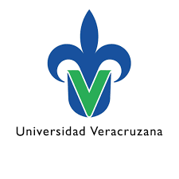
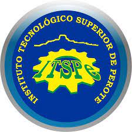
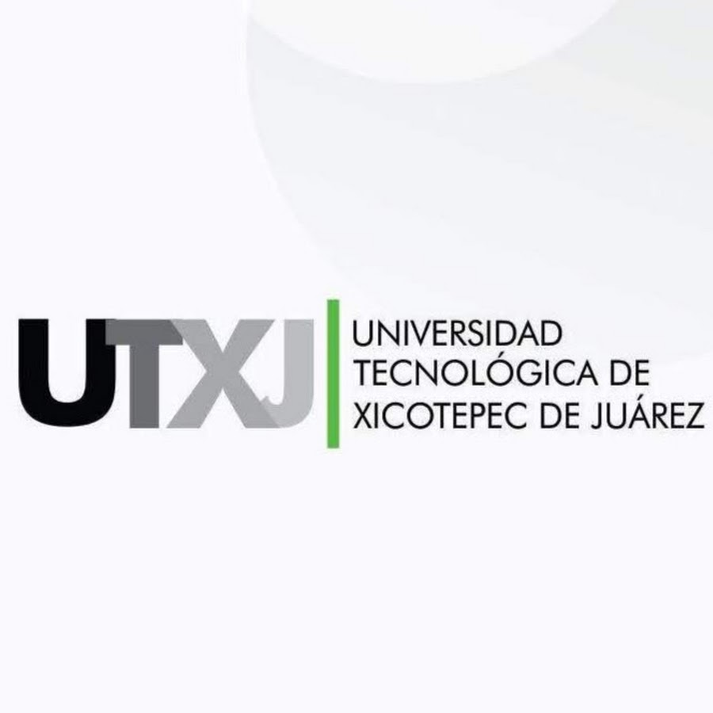
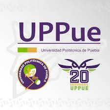

| Universidad Veracruzana (UV) |
 |
+52 228 842 1700 |
Xalapa, Veracruz |
| Universidad del Bienestar Benito Juárez - Altotonga |
 |
No disponible |
Altotonga, Veracruz |
| Benemérita Universidad Autónoma de Puebla (BUAP) |
 |
+52 222 229 5500 |
Av. San Claudio y 18 Sur, Ciudad Universitaria, Puebla |
| Universidad Tecnológica de Teziutlán |
 |
+52 231 312 6653 |
Teziutlán, Puebla |
| Instituto Tecnológico Superior de Perote |
 |
+52 282 825 1434 |
Perote, Veracruz |
| Universidad Politécnica de Huatusco |
 |
+52 273 734 1020 |
Huatusco, Veracruz |
| Universidad Tecnológica de Xicotepec de Juárez |
 |
+52 764 764 0197 |
Xicotepec de Juárez, Puebla |
| Universidad Politécnica de Puebla |
 |
+52 222 309 8800 |
Juan C. Bonilla, Puebla |
| Universidad Tecnológica de Gutiérrez Zamora |
 |
+52 766 846 2194 |
Gutiérrez Zamora, Veracruz |
| Universidad Tecnológica de Oriental (Puebla) |
 |
+52 276 763 8299 |
Oriental, Puebla |